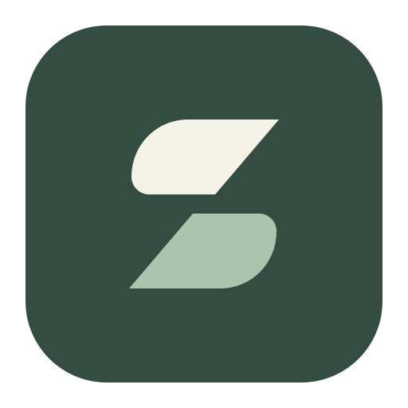
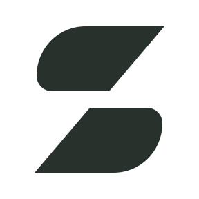
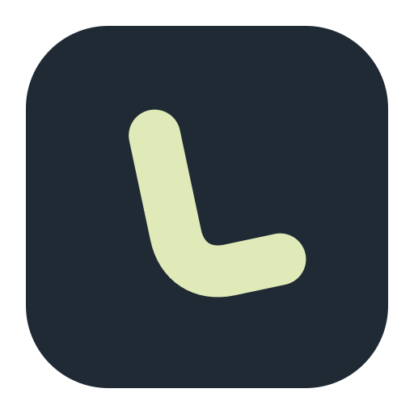
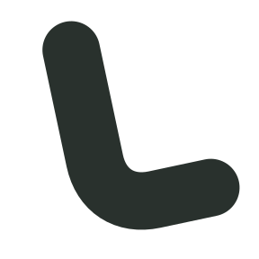
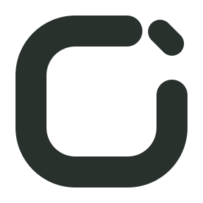

01 / FOLD推荐方向Leaf折面两片错位的柔和色块，形成一条斜向留白。隐约让人想到翻动与层次，适合作为长期使用的独立品牌符号。16243248 px下载 SVG下载 PNG
02 / ARCLETTERFORMLeaf弧线把 L 化成一笔圆润、微微倾斜的弧线。墨蓝与浅黄绿形成鲜明对比，更轻快，也更像一款现代桌面工具。16243248 px下载 SVG下载 PNG
03 / SPACENEGATIVE SPACELeaf留白一个开放的框，围出安静的阅读空间。暖灰、墨黑与一小段铜色笔画，气质更接近书刊与文具品牌。16243248 px下载 SVG下载 PNG